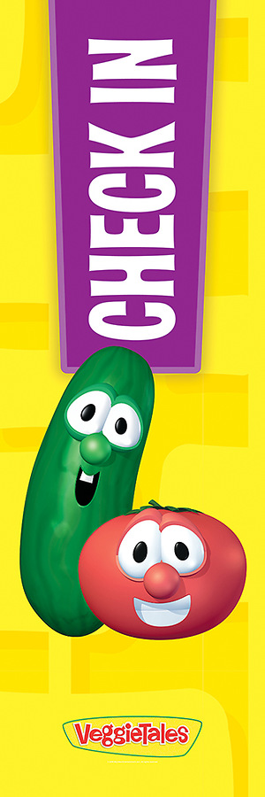

Trường PTDTBT TH&THCS Trà Bùi
Chào mừng các em đến với trang tư vấn tâm lí và hướng nghiệp
Trang chủ
Tư vấn trực tiếp
Tư vấn gián tiếp
1. Khi nghe tin tức hoặc chứng kiến thiên tai xảy ra xung quanh, cảm xúc của em thường là:
A. Em khá bình tĩnh, chỉ lo lắng nhẹ và nhanh chóng ổn định cảm xúc.
B. Em cảm thấy lo lắng, sợ hãi trong một thời gian nhưng sau đó có thể tự trấn an.
C. Em rất sợ hãi, hoảng loạn và cảm xúc tiêu cực kéo dài nhiều ngày.
2. Sau khi xảy ra thiên tai, giấc ngủ của em thường:
A. Gần như không thay đổi, em vẫn ngủ ngon và đúng giờ.
B. Thỉnh thoảng khó ngủ, ngủ không sâu giấc hoặc hay mơ thấy cảnh thiên tai.
C. Thường xuyên mất ngủ, giật mình, ác mộng liên quan đến thiên tai.
3. Khi nhớ lại hoặc nói về thiên tai, em thường:
A. Có thể nói chuyện bình thường mà không quá căng thẳng.
B. Cảm thấy buồn hoặc lo lắng nhẹ khi nhắc lại.
C. Tránh né nhắc đến vì cảm thấy sợ hãi, căng thẳng hoặc ám ảnh.
4. Thiên tai ảnh hưởng đến việc học tập của em như thế nào?
A. Việc học hầu như không bị ảnh hưởng, em vẫn tập trung như trước.
B. Em học kém tập trung hơn trong một thời gian ngắn.
C. Em mất tập trung nghiêm trọng, giảm hứng thú học tập kéo dài.
5. Khi trời mưa lớn, gió mạnh hoặc có dấu hiệu thời tiết xấu, em thường:
A. Bình tĩnh, làm theo hướng dẫn của người lớn và không quá lo lắng.
B. Lo lắng hơn bình thường nhưng vẫn kiểm soát được cảm xúc.
C. Rất hoảng sợ, lo lắng quá mức và khó kiểm soát cảm xúc.
6. Sau thiên tai, mối quan hệ của em với gia đình và bạn bè:
A. Vẫn bình thường, em sẵn sàng chia sẻ cảm xúc với mọi người.
B. Em ít nói hơn, đôi lúc thu mình lại.
C. Em thu hẹp giao tiếp, né tránh nói chuyện và dễ cáu gắt.
7. Em cảm nhận về mức độ an toàn của bản thân sau thiên tai:
A. Em cảm thấy tương đối an toàn và tin tưởng vào sự bảo vệ của gia đình, nhà trường.
B. Em lo lắng về sự an toàn của bản thân và gia đình.
C. Em luôn cảm thấy bất an, sợ hãi và mất cảm giác an toàn.
8. Khi có thông tin dự báo thiên tai, phản ứng của em là:
A. Theo dõi thông tin một cách bình tĩnh và chuẩn bị theo hướng dẫn.
B. Cảm thấy căng thẳng, lo lắng nhiều hơn bình thường.
C. Hoảng sợ, suy nghĩ tiêu cực và tưởng tượng những tình huống xấu nhất.
9. Em đối mặt với cảm xúc tiêu cực do thiên tai bằng cách nào?
A. Chia sẻ với người thân, thầy cô hoặc bạn bè để được hỗ trợ.
B. Giữ trong lòng, thỉnh thoảng mới chia sẻ.
C. Không chia sẻ với ai, cố gắng né tránh hoặc kìm nén cảm xúc.
10. Sau khi trải qua thiên tai, em tự đánh giá trạng thái tâm lí của mình:
A. Ổn định, dần thích nghi và quay lại sinh hoạt bình thường.
B. Có biểu hiện căng thẳng nhưng đang dần hồi phục.
C. Bị ảnh hưởng nặng nề, cảm xúc tiêu cực kéo dài và khó tự vượt qua.
